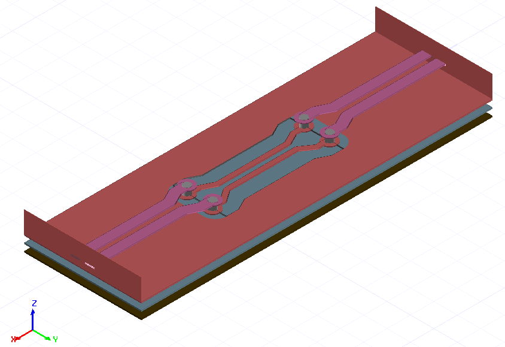

EDB: fully parametrized design#
This example shows how to use the EDB interface along with HFSS 3D Layout to create and solve a parameterized layout. The layout shows a differential via transition on a printed circuit board with back-to-back microstrip to stripline transitions. The model is fully parameterized to enable investigation of the transition performance on the many degrees of freedom.
The resulting model is shown below

[1]:
import os
import tempfile
import ansys.aedt.core
import pyedb
Set non-graphical mode#
Set non-graphical mode. The default is False, which opens the AEDT UI.
[2]:
non_graphical = False
Launch EDB.#
[3]:
temp_dir = tempfile.TemporaryDirectory(suffix=".ansys")
aedb_path = os.path.join(temp_dir.name, "pcb.aedb")
# Select EDB version (change it manually if needed, e.g. "2024.2")
edb_version = "2024.2"
print(f"EDB version: {edb_version}")
edb = pyedb.Edb(edbpath=aedb_path, edbversion=edb_version)
EDB version: 2024.2
PyAEDT INFO: Logger is initialized in EDB.
PyAEDT INFO: legacy v0.28.0
PyAEDT INFO: Python version 3.10.11 (tags/v3.10.11:7d4cc5a, Apr 5 2023, 00:38:17) [MSC v.1929 64 bit (AMD64)]
PyAEDT INFO: EDB C:\Users\ansys\AppData\Local\Temp\tmptkmgp337.ansys\pcb.aedb created correctly.
PyAEDT INFO: EDB initialized.
Define the parameters.
[4]:
params = {
"$ms_width": "0.4mm",
"$sl_width": "0.2mm",
"$ms_spacing": "0.2mm",
"$sl_spacing": "0.1mm",
"$via_spacing": "0.5mm",
"$via_diam": "0.3mm",
"$pad_diam": "0.6mm",
"$anti_pad_diam": "0.7mm",
"$pcb_len": "15mm",
"$pcb_w": "5mm",
"$x_size": "1.2mm",
"$y_size": "1mm",
"$corner_rad": "0.5mm",
}
for par_name in params:
edb.add_project_variable(par_name, params[par_name])
Define the stackup layers from bottom to top.
[5]:
layers = {
"top": {"type": "signal", "thickness": "35um", "material": "copper"},
"diel_1": {"type": "dielectric", "thickness": "275um", "material": "FR4_epoxy"},
"sig_1": {"type": "signal", "thickness": "35um", "material": "copper"},
"diel_2": {"type": "dielectric", "thickness": "275um", "material": "FR4_epoxy"},
"sig_2": {"type": "signal", "thickness": "35um", "material": "copper"},
"diel_3": {"type": "dielectric", "thickness": "275um", "material": "FR4_epoxy"},
"bottom": {"type": "signal", "thickness": "35um", "material": "copper"},
}
layer_names = list(layers.keys())[::-1]
# Create the EDB stackup.
# Define the bottom layer
edb.stackup.load(layers)
PyAEDT INFO: Configuration file does not have material definition. Using aedb and syslib materials.
[5]:
True
Create a parametrized padstack for the signal via.
[6]:
signal_via_padstack = "automated_via"
edb.padstacks.create(
padstackname=signal_via_padstack,
holediam="$via_diam",
paddiam="$pad_diam",
antipaddiam="",
antipad_shape="Bullet",
x_size="$x_size",
y_size="$y_size",
corner_radius="$corner_rad",
start_layer=layer_names[-1],
stop_layer=layer_names[-3],
)
PyAEDT INFO: Padstack automated_via create correctly
[6]:
'automated_via'
Assign net names. There are only two signal nets.
[7]:
net_p = "p"
net_n = "n"
Place the signal vias.
[8]:
edb.padstacks.place(
position=["$pcb_len/3", "($ms_width+$ms_spacing+$via_spacing)/2"],
definition_name=signal_via_padstack,
net_name=net_p,
via_name="",
rotation=90.0,
)
[8]:
<pyedb.dotnet.edb_core.edb_data.padstacks_data.EDBPadstackInstance at 0x15917be8600>
[9]:
edb.padstacks.place(
position=["2*$pcb_len/3", "($ms_width+$ms_spacing+$via_spacing)/2"],
definition_name=signal_via_padstack,
net_name=net_p,
via_name="",
rotation=90.0,
)
[9]:
<pyedb.dotnet.edb_core.edb_data.padstacks_data.EDBPadstackInstance at 0x15917beb600>
[10]:
edb.padstacks.place(
position=["$pcb_len/3", "-($ms_width+$ms_spacing+$via_spacing)/2"],
definition_name=signal_via_padstack,
net_name=net_n,
via_name="",
rotation=-90.0,
)
[10]:
<pyedb.dotnet.edb_core.edb_data.padstacks_data.EDBPadstackInstance at 0x15917510840>
[11]:
edb.padstacks.place(
position=["2*$pcb_len/3", "-($ms_width+$ms_spacing+$via_spacing)/2"],
definition_name=signal_via_padstack,
net_name=net_n,
via_name="",
rotation=-90.0,
)
[11]:
<pyedb.dotnet.edb_core.edb_data.padstacks_data.EDBPadstackInstance at 0x1591751b400>
Draw parametrized traces#
Trace width and the routing (Microstrip-Stripline-Microstrip). Applies to both p and n nets.
[12]:
# Trace width, n and p
width = ["$ms_width", "$sl_width", "$ms_width"]
# Routing layer, n and p
route_layer = [layer_names[-1], layer_names[4], layer_names[-1]]
Define points for three traces in the “p” net
[13]:
points_p = [
[
["0.0", "($ms_width+$ms_spacing)/2"],
["$pcb_len/3-2*$via_spacing", "($ms_width+$ms_spacing)/2"],
["$pcb_len/3-$via_spacing", "($ms_width+$ms_spacing+$via_spacing)/2"],
["$pcb_len/3", "($ms_width+$ms_spacing+$via_spacing)/2"],
],
[
["$pcb_len/3", "($ms_width+$sl_spacing+$via_spacing)/2"],
["$pcb_len/3+$via_spacing", "($ms_width+$sl_spacing+$via_spacing)/2"],
["$pcb_len/3+2*$via_spacing", "($sl_width+$sl_spacing)/2"],
["2*$pcb_len/3-2*$via_spacing", "($sl_width+$sl_spacing)/2"],
["2*$pcb_len/3-$via_spacing", "($ms_width+$sl_spacing+$via_spacing)/2"],
["2*$pcb_len/3", "($ms_width+$sl_spacing+$via_spacing)/2"],
],
[
["2*$pcb_len/3", "($ms_width+$ms_spacing+$via_spacing)/2"],
["2*$pcb_len/3+$via_spacing", "($ms_width+$ms_spacing+$via_spacing)/2"],
["2*$pcb_len/3+2*$via_spacing", "($ms_width+$ms_spacing)/2"],
["$pcb_len", "($ms_width+$ms_spacing)/2"],
],
]
Define points for three traces in the “n” net
[14]:
points_n = [
[
["0.0", "-($ms_width+$ms_spacing)/2"],
["$pcb_len/3-2*$via_spacing", "-($ms_width+$ms_spacing)/2"],
["$pcb_len/3-$via_spacing", "-($ms_width+$ms_spacing+$via_spacing)/2"],
["$pcb_len/3", "-($ms_width+$ms_spacing+$via_spacing)/2"],
],
[
["$pcb_len/3", "-($ms_width+$sl_spacing+$via_spacing)/2"],
["$pcb_len/3+$via_spacing", "-($ms_width+$sl_spacing+$via_spacing)/2"],
["$pcb_len/3+2*$via_spacing", "-($ms_width+$sl_spacing)/2"],
["2*$pcb_len/3-2*$via_spacing", "-($ms_width+$sl_spacing)/2"],
["2*$pcb_len/3-$via_spacing", "-($ms_width+$sl_spacing+$via_spacing)/2"],
["2*$pcb_len/3", "-($ms_width+$sl_spacing+$via_spacing)/2"],
],
[
["2*$pcb_len/3", "-($ms_width+$ms_spacing+$via_spacing)/2"],
["2*$pcb_len/3 + $via_spacing", "-($ms_width+$ms_spacing+$via_spacing)/2"],
["2*$pcb_len/3 + 2*$via_spacing", "-($ms_width+$ms_spacing)/2"],
["$pcb_len", "-($ms_width + $ms_spacing)/2"],
],
]
Add traces to the EDB.
[15]:
trace_p = []
trace_n = []
for n in range(len(points_p)):
trace_p.append(edb.modeler.create_trace(points_p[n], route_layer[n], width[n], net_p, "Flat", "Flat"))
trace_n.append(edb.modeler.create_trace(points_n[n], route_layer[n], width[n], net_n, "Flat", "Flat"))
Create the wave ports
[16]:
p1 = edb.hfss.create_differential_wave_port(
trace_p[0].id,
["0.0", "($ms_width+$ms_spacing)/2"],
trace_n[0].id,
["0.0", "-($ms_width+$ms_spacing)/2"],
"wave_port_1",
)
[17]:
pos_p1 = p1[1].terminals[0].name
neg_p1 = p1[1].terminals[1].name
[18]:
p2 = edb.hfss.create_differential_wave_port(
trace_p[2].id,
["$pcb_len", "($ms_width+$ms_spacing)/2"],
trace_n[2].id,
["$pcb_len", "-($ms_width + $ms_spacing)/2"],
"wave_port_2",
)
[19]:
pos_p2 = p2[1].terminals[0].name
neg_p2 = p2[1].terminals[1].name
Draw a conducting rectangle on the ground layers.
[20]:
gnd_poly = [
[0.0, "-$pcb_w/2"],
["$pcb_len", "-$pcb_w/2"],
["$pcb_len", "$pcb_w/2"],
[0.0, "$pcb_w/2"],
]
gnd_shape = edb.modeler.Shape("polygon", points=gnd_poly)
Void in ground for traces on the signal routing layer
[21]:
void_poly = [
["$pcb_len/3", "-($ms_width+$ms_spacing+$via_spacing+$anti_pad_diam)/2-$via_spacing/2"],
[
"$pcb_len/3 + $via_spacing",
"-($ms_width+$ms_spacing+$via_spacing+$anti_pad_diam)/2-$via_spacing/2",
],
["$pcb_len/3 + 2*$via_spacing", "-($ms_width+$ms_spacing+$via_spacing+$anti_pad_diam)/2"],
["2*$pcb_len/3 - 2*$via_spacing", "-($ms_width+$ms_spacing+$via_spacing+$anti_pad_diam)/2"],
[
"2*$pcb_len/3 - $via_spacing",
"-($ms_width+$ms_spacing+$via_spacing+$anti_pad_diam)/2-$via_spacing/2",
],
["2*$pcb_len/3", "-($ms_width+$ms_spacing+$via_spacing+$anti_pad_diam)/2-$via_spacing/2"],
["2*$pcb_len/3", "($ms_width+$ms_spacing+$via_spacing+$anti_pad_diam)/2+$via_spacing/2"],
[
"2*$pcb_len/3 - $via_spacing",
"($ms_width+$ms_spacing+$via_spacing+$anti_pad_diam)/2+$via_spacing/2",
],
["2*$pcb_len/3 - 2*$via_spacing", "($ms_width+$ms_spacing+$via_spacing+$anti_pad_diam)/2"],
["$pcb_len/3 + 2*$via_spacing", "($ms_width+$ms_spacing+$via_spacing+$anti_pad_diam)/2"],
[
"$pcb_len/3 + $via_spacing",
"($ms_width+$ms_spacing+$via_spacing+$anti_pad_diam)/2+$via_spacing/2",
],
["$pcb_len/3", "($ms_width+$ms_spacing+$via_spacing+$anti_pad_diam)/2+$via_spacing/2"],
["$pcb_len/3", "($ms_width+$ms_spacing+$via_spacing+$anti_pad_diam)/2"],
]
void_shape = edb.modeler.Shape("polygon", points=void_poly)
Add ground conductors.
[22]:
for layer in layer_names[:-1:2]:
# add void if the layer is the signal routing layer.
void = [void_shape] if layer == route_layer[1] else []
edb.modeler.create_polygon(main_shape=gnd_shape, layer_name=layer, voids=void, net_name="gnd")
Plot the layout.
[23]:
edb.nets.plot(None)
PyAEDT INFO: Nets Point Generation time 0.047 seconds
C:\actions-runner\_work\pyedb\pyedb\.venv\lib\site-packages\pyedb\generic\plot.py:144: UserWarning: FigureCanvasAgg is non-interactive, and thus cannot be shown
plt.show()
Save the EDB.
[24]:
edb.save_edb()
edb.close_edb()
PyAEDT INFO: EDB file save time: 0.00ms
PyAEDT INFO: EDB file release time: 0.00ms
[24]:
True
Open the project in HFSS 3D Layout.
[25]:
h3d = ansys.aedt.core.Hfss3dLayout(
project=aedb_path,
version=edb_version,
non_graphical=non_graphical,
new_desktop=True,
)
PyAEDT INFO: Python version 3.10.11 (tags/v3.10.11:7d4cc5a, Apr 5 2023, 00:38:17) [MSC v.1929 64 bit (AMD64)]
PyAEDT INFO: PyAEDT version 0.11.dev0.
PyAEDT INFO: Initializing new Desktop session.
PyAEDT INFO: Log on console is enabled.
PyAEDT INFO: Log on file C:\Users\ansys\AppData\Local\Temp\pyaedt_ansys_2d31a165-0881-491c-ae86-f6ec859a4bb2.log is enabled.
PyAEDT INFO: Log on AEDT is enabled.
PyAEDT INFO: Debug logger is disabled. PyAEDT methods will not be logged.
PyAEDT INFO: Launching PyAEDT with gRPC plugin.
PyAEDT INFO: New AEDT session is starting on gRPC port 63021
PyAEDT INFO: AEDT installation Path C:\Program Files\AnsysEM\v242\Win64
PyAEDT INFO: Ansoft.ElectronicsDesktop.2024.2 version started with process ID 7288.
PyAEDT INFO: EDB folder C:\Users\ansys\AppData\Local\Temp\tmptkmgp337.ansys\pcb.aedb has been imported to project pcb
PyAEDT INFO: Active Design set to 0;Cell_2K4XKC
PyAEDT INFO: Aedt Objects correctly read
Add HFSS simulation setup#
Add HFSS simulation setup.
[26]:
setup = h3d.create_setup()
setup.props["AdaptiveSettings"]["SingleFrequencyDataList"]["AdaptiveFrequencyData"]["MaxPasses"] = 3
h3d.create_linear_count_sweep(
setup=setup.name,
unit="GHz",
start_frequency=0,
stop_frequency=10,
num_of_freq_points=1001,
name="sweep1",
sweep_type="Interpolating",
interpolation_tol_percent=1,
interpolation_max_solutions=255,
save_fields=False,
use_q3d_for_dc=False,
)
PyAEDT INFO: Linear count sweep sweep1 has been correctly created.
[26]:
<ansys.aedt.core.modules.solve_sweeps.SweepHFSS3DLayout at 0x15917516380>
Define the differential pairs to used to calculate differential and common mode s-parameters.
[27]:
h3d.set_differential_pair(differential_mode="In", assignment=pos_p1, reference=neg_p1)
h3d.set_differential_pair(differential_mode="Out", assignment=pos_p2, reference=neg_p2)
[27]:
True
Solve the project.
[28]:
h3d.analyze()
PyAEDT INFO: Key Desktop/ActiveDSOConfigurations/HFSS 3D Layout Design correctly changed.
PyAEDT INFO: Solving all design setups.
PyAEDT INFO: Key Desktop/ActiveDSOConfigurations/HFSS 3D Layout Design correctly changed.
PyAEDT INFO: Design setup None solved correctly in 0.0h 1.0m 29.0s
[28]:
True
Plot the results and shut down AEDT.
[29]:
solutions = h3d.post.get_solution_data(["dB(S(In,In))", "dB(S(In,Out))"], context="Differential Pairs")
solutions.plot()
h3d.release_desktop()
PyAEDT INFO: Parsing C:/Users/ansys/AppData/Local/Temp/tmptkmgp337.ansys/pcb.aedt.
PyAEDT INFO: File C:/Users/ansys/AppData/Local/Temp/tmptkmgp337.ansys/pcb.aedt correctly loaded. Elapsed time: 0m 0sec
PyAEDT INFO: aedt file load time 0.03124380111694336
PyAEDT INFO: Loading Modeler.
PyAEDT INFO: Modeler loaded.
PyAEDT INFO: EDB loaded.
PyAEDT INFO: Layers loaded.
PyAEDT INFO: Primitives loaded.
PyAEDT INFO: Modeler class has been initialized! Elapsed time: 0m 0sec
PyAEDT INFO: PostProcessor class has been initialized! Elapsed time: 0m 0sec
PyAEDT INFO: Post class has been initialized! Elapsed time: 0m 0sec
PyAEDT INFO: Solution Data Correctly Loaded.
PyAEDT INFO: Desktop has been released and closed.
[29]:
True
Note that the ground nets are only connected to each other due to the wave ports. The problem with poor grounding can be seen in the S-parameters. This example can be downloaded as a Jupyter Notebook, so you can modify it. Try changing parameters or adding ground vias to improve performance.
The final cell cleans up the temporary directory, removing all files.
[30]:
temp_dir.cleanup()